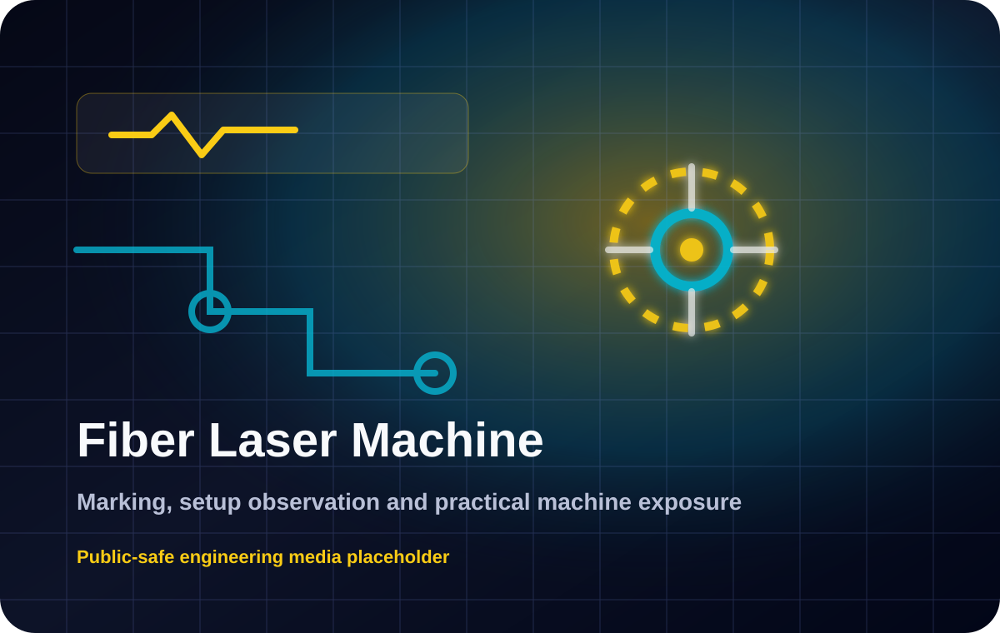
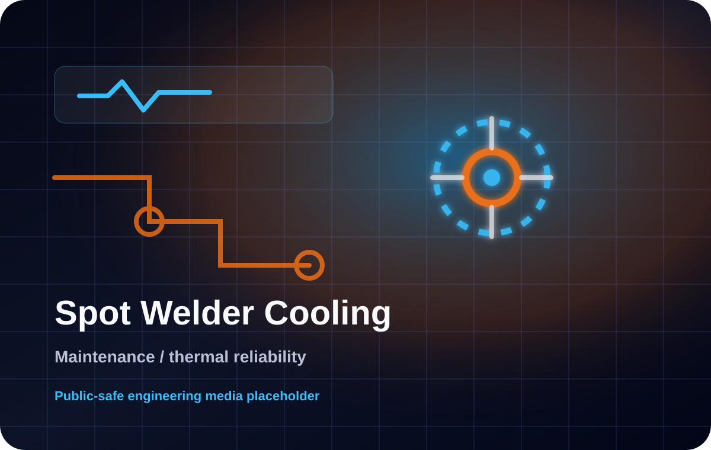
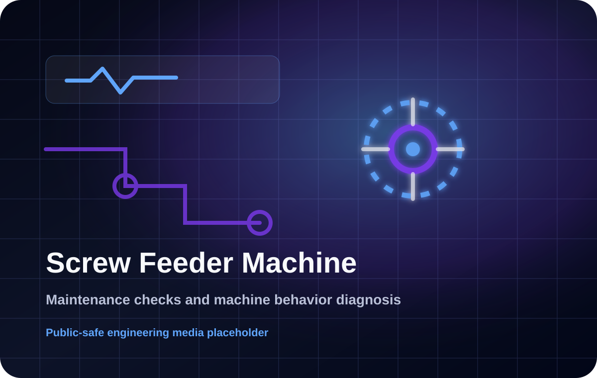
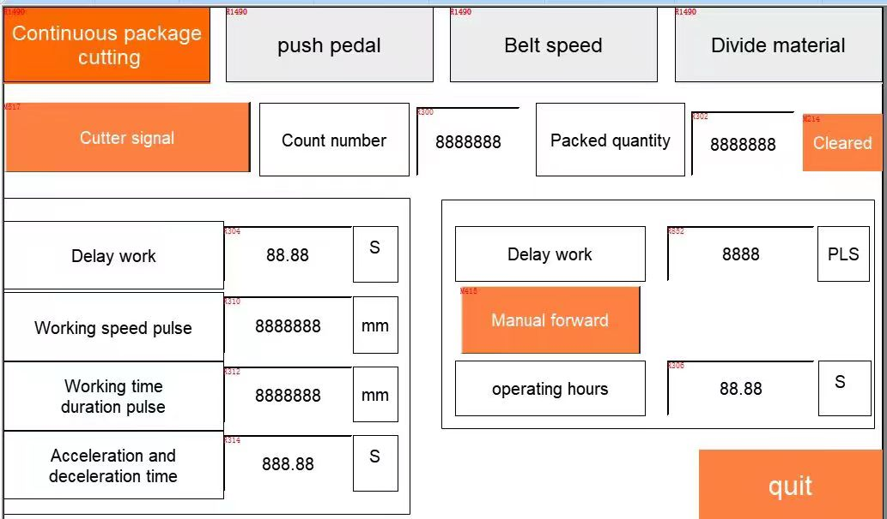
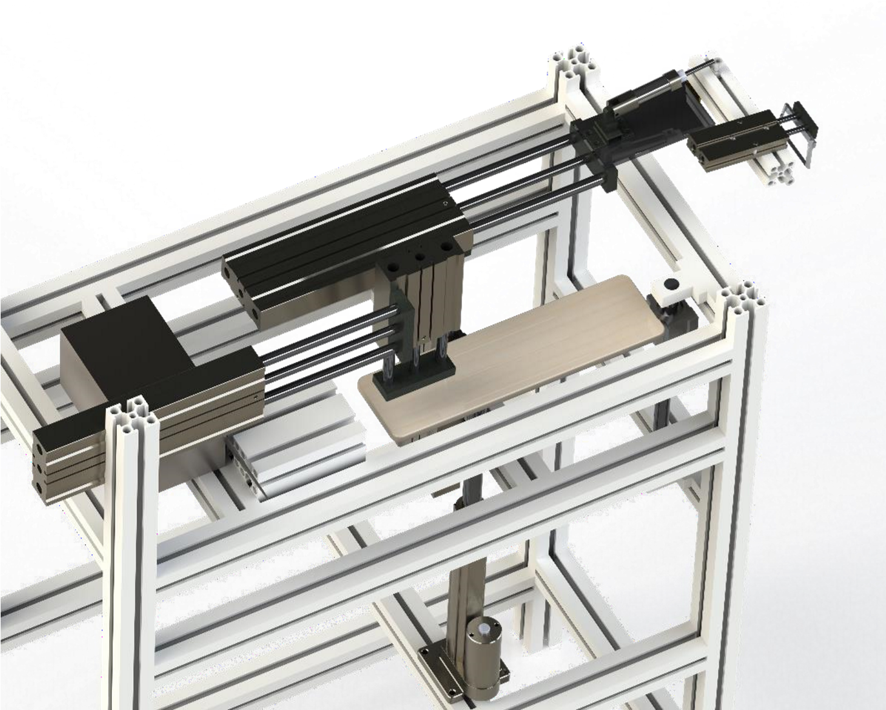
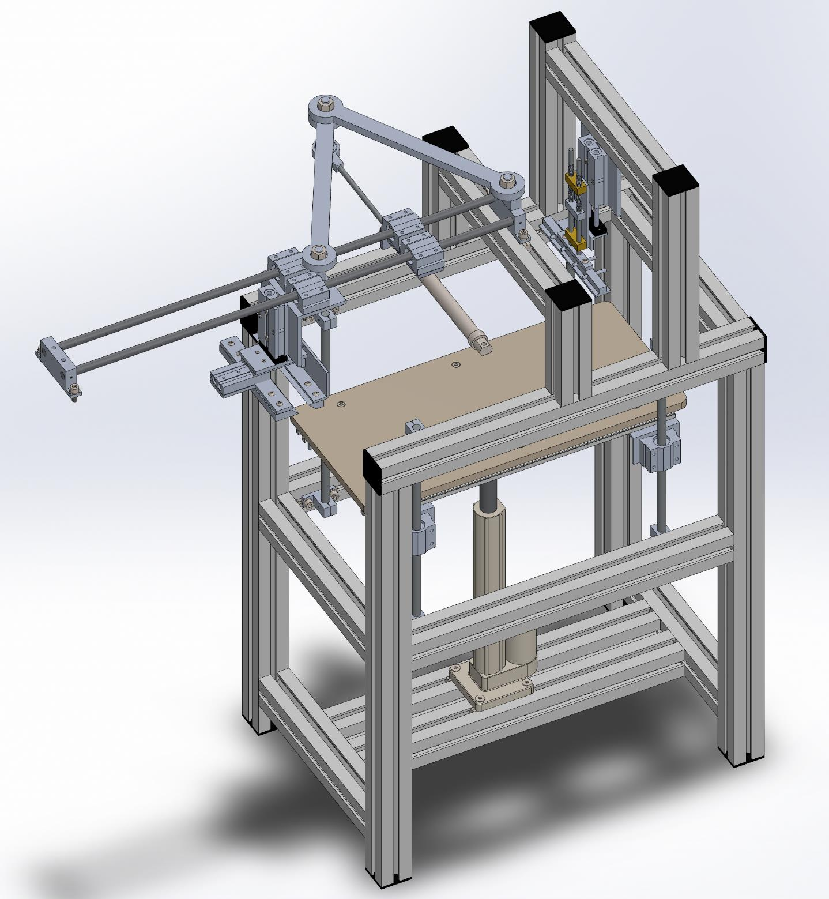
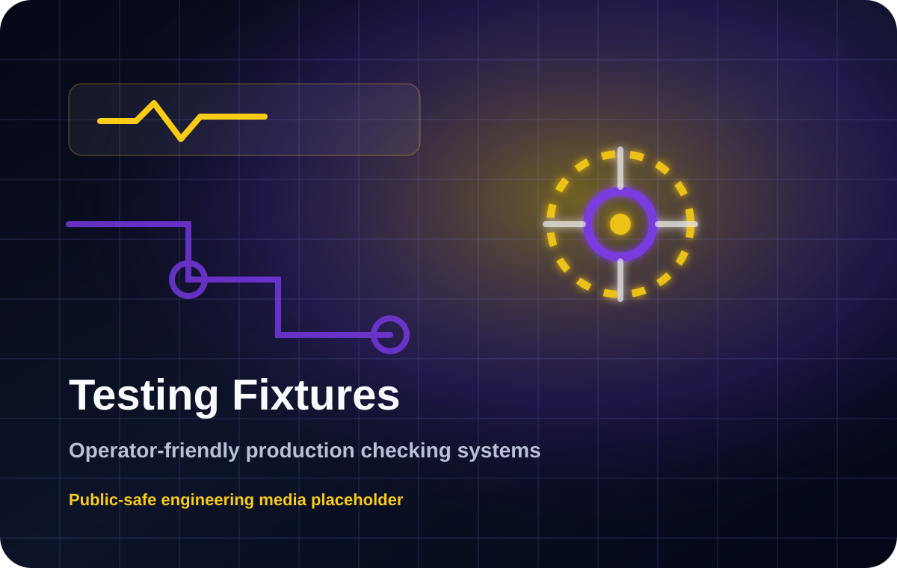

Machines & Technologies
Machines I have worked with
This page shows practical exposure to machines and industrial technologies that are difficult to communicate clearly inside a normal CV.

Fiber Laser Machine
A fiber laser marking machine is used for permanent marking, engraving and traceability work on suitable industrial materials.
Experience: Setup observation, marking workflow exposure and production support thinking.
Technologies: Marking, fixtures, safety, material behavior
Open machine notes
Spot Welder
A spot welder joins sheet-metal or conductive parts using pressure and electrical resistance heating at controlled contact points.
Experience: Troubleshooting, cooling improvement concept and electrode/water-cooling review.
Technologies: Thermal management, electrodes, cooling, maintenance, reliability
Open machine notes
Screw Feeder Machine
A screw feeder machine presents screws or small fasteners in a controlled way to improve repetitive assembly flow.
Experience: Maintenance checks, failure behavior review and production support.
Technologies: Feeding, vibration, mechanical drive, control logic
Open machine notes
Packing Machine
A continuous packing machine controls film feeding, sealing, cutting, speed, counting and package output through mechanical motion and HMI-controlled settings.
Experience: Factory support and troubleshooting exposure using the machine manual and operational screens.
Technologies: Sensors, pneumatics, timing, belt speed, HMI settings, production flow
Open machine notes
Bonding Tape Automation Machine
A bonding tape automation machine feeds tape, measures length, cuts it and applies heat/pressure to bond the tape to fabric in a repeatable cycle.
Experience: Training project exposure to pneumatic sequencing, stepper-based feeding, heating control, testing and safety-minded operation.
Technologies: PLC concept, PID temperature control, pneumatics, solenoid valves, stepper motor, sensors
Open machine notes
Assembly Machines
Industrial assembly machines combine mechanisms, fixtures, sensors, actuators and control logic to improve repeatability and production flow.
Experience: Automation support, commissioning thinking and machine reliability work.
Technologies: PLC, HMI, sensors, pneumatics, mechanisms, fixtures
Open machine notes
Testing Fixtures
Testing fixtures help operators check parts consistently by controlling part placement, loading direction, sensing and feedback.
Experience: Fixture-based checking concepts with simple feedback and operator-friendly use.
Technologies: Sensing, indicators, ergonomics, repeatability
Open machine notes